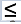

| Тема 2. Классификация типов данных. | ||
| Назад | ||
|
Любые данные могут быть отнесены к одному из двух типов: простому (основному), форма представления которого определяется архитектурой ЭВМ, или сложному, конструируемому пользователем для решения конкретных задач. Данные простого типа — это символы, числа и т.п. элементы, дальнейшее дробление которых не имеет смысла. Из таких элементарных данных формируются структуры (сложные типы) данных. Принято различать следующие типы данных: · Простые.
· Составные.
Рассмотрим перечисленные типы данных подробнее. Простые типыЧисловые типы. Значениями переменных таких типов являются числа. К ним могут применяться обычные арифметические операции, операции сравнения (в результате получается логическое значение). Принципиально различны в компьютерном представлении целые и вещественные типы. Целочисленные типы данных делятся, в свою очередь, на знаковые и беззнаковые. Целочисленные со знаком могут принимать как положительные, так и отрицательные значения, а беззнаковые — только неотрицательные значения. Диапазон значений при этом определяется количеством разрядов, отводимых на представление конкретного типа в памяти компьютера (см. “Представление чисел”).
Вещественные типы бывают:
с фиксированной точкой, то есть хранятся знак и цифры целой и
дробной частей (в настоящее время в языках программирования
реализуются редко), и с плавающей точкой, то есть число
приводится к виду m х
2e,
где m —
мантисса, а e —
порядок числа, причем 1/2  Символьный тип. Элемент этого типа хранит один символ. При этом могут использоваться различные кодировки, которые определяют, какому коду (двоичному числу) какой символ (знак) соответствует. К значениям этого типа могут применяться операции сравнения (в результате получается логическое значение). Символы считаются упорядоченными согласно своим кодам (номерам в кодовой таблице). Логический тип. Данные этого типа имеют два значения: истина (true) и ложь (false). К ним могут применяться логические операции. Используется в условных выражениях, операторах ветвления и циклах. В некоторых языках, например С, является подтипом числового типа, при этом ложь = 0, истина = 1 (или истинным считается любое значение, отличное от нуля). Перечислимый тип. Отражает самый прямолинейный способ описания простого типа — перечисление всех значений, относящихся к этому типу. Каждая константа такого типа получает свой порядковый номер, что позволяет реализовать ряд простых операций над этим типом, таких, как получить следующее по порядку значение данного типа. Множество как тип данных в основном совпадает с обычным математическим понятием множества. Допустимы стандартные операции с множествами и проверка на принадлежность элемента множеству. В некоторых языках рассматривается как составной тип (массив логических значений, i-й элемент которого указывает, находится ли i в множестве), однако эффективней реализовывать множество как машинное слово (или несколько слов), каждый бит которого характеризует наличие соответствующего элемента в множестве. Указатель (тип данных). Если описанные выше типы данных представляли какие-либо объекты реального мира, то указатели представляют объекты компьютерного мира, то есть являются исключительно компьютерными терминами. Переменная-указатель хранит адрес в памяти компьютера, указывающий на какую-либо информацию, как правило — на другую переменную. Составные (структурированные) типы.Структурированными данными называют такие данные, которые состоят из других типов данных. Структурированные типы данных определяют наборы однотипных или разнотипных компонент. К ним относятся, в частности, переменные типов: Array - массивы (табличные данные); String – строковые величины; Record – данные типа запись; Set – данные типа множество; File – данные типа файл. Структурированные типы формируются на основе комбинаций простых типов. Массив является индексированным набором элементов одного типа, простого или составного (см. “Операции с массивами”). Одномерный массив предназначен для компьютерной реализации такой структуры, как вектор, двухмерный массив — таблицы. Строковый тип. Хранит строку символов. Вообще говоря, может рассматриваться как массив символов, но иногда рассматривается в качестве простого типа. Часто используется для хранения фамилий людей, названий предметов и т.п. К элементам этого типа может применяться операция конкатенации (сложения) строк. Обычно реализованы также операции сравнения над строками, в том числе операции “<” и “>”, которые интерпретируются как сравнение строк согласно алфавитному порядку (алфавитом здесь является набор символов соответствующей кодовой таблицы). Во многих языках реализованы и специальные операции над строками: поиск заданного символа (подстроки), вставка символа, удаление символа, замена символа. Запись. Наиболее общий метод получения составных типов из простых заключается в объединении элементов произвольных типов. Причем сами эти элементы могут быть, в свою очередь, составными. Так, человек описывается с помощью нескольких различных характеристик, таких, как имя, фамилия, дата рождения, пол, и т.д. Записью (в языке С — структурой) называется набор различных элементов (полей записи), хранимый как единое целое. При этом возможен доступ к отдельным полям записи. К полю записи применимы те же операции, что и к базовому типу, к которому это поле относится (тип каждого поля указывается при описании записи). Последовательность. Данный тип можно рассматривать как массив бесконечного размера (память для него может выделяться в процессе выполнения программы по мере роста последовательности). Зачастую такой тип данных обладает лишь последовательным доступом к элементам. Под этим подразумевается, что последовательность просматривается от одного элемента строго к следующему, формируется же она путем добавления элементов в ее конец. В языке Pascal подобному типу соответствуют файловые типы данных. Производные типы. Производные типы– это типы, определяемые пользователем. К ним относят: Структуры, Объединения, Перечисление, Объявление нового имени.
|
||
| Конспект подготовлен Бакулиным А. М. 2022 год. | ||